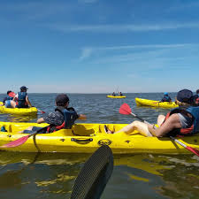
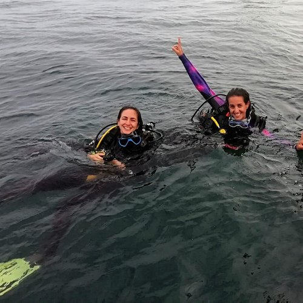
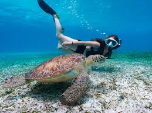
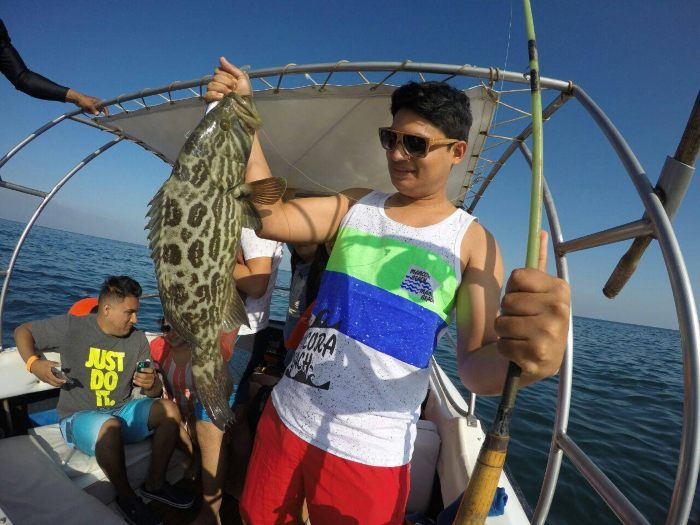

Kayak en el Mar
Explora las costas de Los Órganos en kayak, una actividad relajante y divertida.

Buceo
Sumérgete en las aguas cristalinas y descubre la fauna marina local.

Snorkel
Una actividad perfecta para ver de cerca peces y otros animales marinos.

Pesca Deportiva
Prueba tus habilidades con la pesca en mar abierto y disfruta de la tranquilidad.